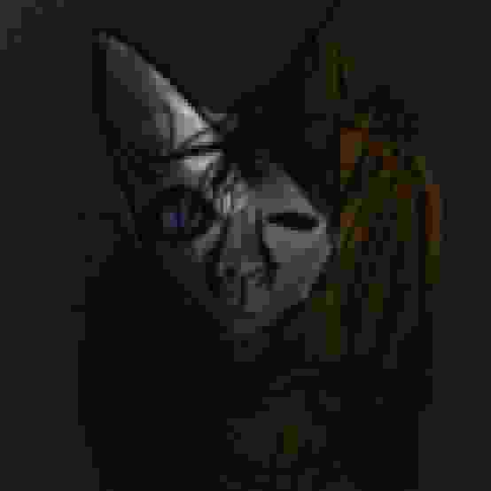
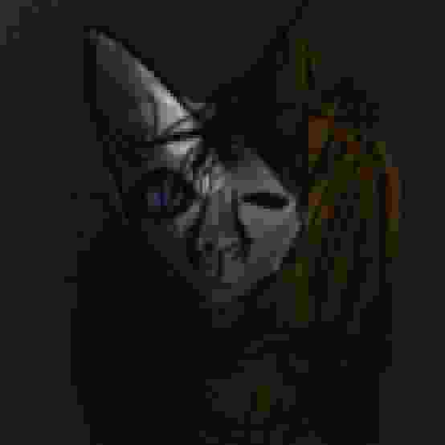

This is a first-person game inspired by the popular '96 game Baldi's Basics, this game is completely different, it has original characters, original gameplay and never-before-seen mechanics! (original game desc.) The purpose of this page is purely to prevent this game from becoming lost media. All content was extracted from the Ordinary Games Ent. archives after the company closed in 1999.
 
